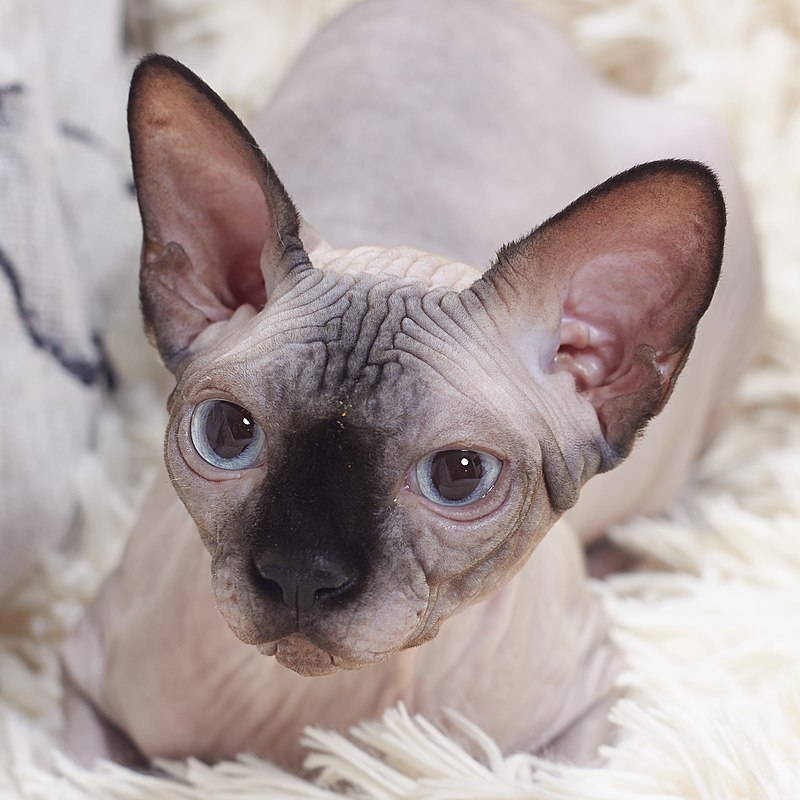

스핑크스
| 묘종 | 스핑크스 | 특징 | 털이 없음 |
|---|
스핑크스(Sphynx)는 단모종 (털이 짧은) 고양이의 품종 중 하나로 1998년 CFA에 잡종부문으로 등록되었다. 큰 눈과 귀가 특징이며, 추위나 더위에 약하다. 털이 없는 대신, 피부에 유분기가 있다. 그 이유는 털이 없어 털 대신 자신의 피부를 보호하기 위해서이다. 털이 없어 다른 고양이들과는 다르게 주름이 잘 보인다. 대부분 주인에게 애교가 많으며 다른 고양이들과 다르게 야생성이 없다. 모습이 스핑크스와 모습이 비슷하여 이름이 스핑크스이다.
분류
스핑크스 고양이는 보통 두 종류로 나뉘는데, 캐나다가 고향인 캐너디언 스핑크스 와 러시아, 북유럽 등지의 돈 스핑크스(돈스코이)라는 종류가 있다. 이 두 종류의 고양이는 전문가가 아니면 얼핏 보아서는 분간하기가 조금 어려울 정도로 닮아 있다. 국내에서는 보통 캐너디언 스핑크스를 조금 더 품종묘 가치가 있다고 인정하는 분위기이고, 실제 거래가격도 비싼 편이다.
개요
넓은 의미로 스핑크스 고양이는 털이 없는, 즉 무모 종의 고양이로 분류되는데, 이런 무모종의 고양이는 스핑크스 이외에도 데본렉스 와 코호나 라는 고양이가 대표적으로 꼽힌다.하지만 "털이 없다."라는 기준만 놓고 보면 좀 모호한 부분이 있는 것이, 캐너디언 스핑크스는 완전히 털이 없는 무모가 아니라 얼핏 보아서는 털이 없는 것처럼 보이지만 실제로 자세히 들여다보면 몸 전체에 마치 복숭아처럼 0.5mm 이하의 아주 잔 솜털이 촘촘히 나 있다. 또한 몸의 일부분 예컨데 보통은 얼굴의 콧등 주위와 손, 발의 말단 부분, 꼬리부분 등에는 그냥 눈으로 보아도 인식이 될 정도로 0.5~2mm 정도의 잔털이 보이는 경우도 있다.그러나 다른 품종의 고양이와는 비교할 수 없을 정도로 눈에 보이는 털이 없기 때문에 보통은 무모로 인식하기 쉽고, 실제로 털 빠짐도 거의 없는 편이다.
기원
넓은 의미로 스핑크스 고양이는 털이 없는, 즉 무모 종의 고양이로 분류되는데, 이런 무모종의 고양이는 스핑크스 이외에도 데본렉스 와 코호나 라는 고양이가 대표적으로 꼽힌다.하지만 "털이 없다."라는 기준만 놓고 보면 좀 모호한 부분이 있는 것이, 캐너디언 스핑크스는 완전히 털이 없는 무모가 아니라 얼핏 보아서는 털이 없는 것처럼 보이지만 실제로 자세히 들여다보면 몸 전체에 마치 복숭아처럼 0.5mm 이하의 아주 잔 솜털이 촘촘히 나 있다. 또한 몸의 일부분 예컨데 보통은 얼굴의 콧등 주위와 손, 발의 말단 부분, 꼬리부분 등에는 그냥 눈으로 보아도 인식이 될 정도로 0.5~2mm 정도의 잔털이 보이는 경우도 있다.그러나 다른 품종의 고양이와는 비교할 수 없을 정도로 눈에 보이는 털이 없기 때문에 보통은 무모로 인식하기 쉽고, 실제로 털 빠짐도 거의 없는 편이다.
외형
넓은 의미로 스핑크스 고양이는 털이 없는, 즉 무모 종의 고양이로 분류되는데, 이런 무모종의 고양이는 스핑크스 이외에도 데본렉스 와 코호나 라는 고양이가 대표적으로 꼽힌다.하지만 "털이 없다."라는 기준만 놓고 보면 좀 모호한 부분이 있는 것이, 캐너디언 스핑크스는 완전히 털이 없는 무모가 아니라 얼핏 보아서는 털이 없는 것처럼 보이지만 실제로 자세히 들여다보면 몸 전체에 마치 복숭아처럼 0.5mm 이하의 아주 잔 솜털이 촘촘히 나 있다. 또한 몸의 일부분 예컨데 보통은 얼굴의 콧등 주위와 손, 발의 말단 부분, 꼬리부분 등에는 그냥 눈으로 보아도 인식이 될 정도로 0.5~2mm 정도의 잔털이 보이는 경우도 있다.그러나 다른 품종의 고양이와는 비교할 수 없을 정도로 눈에 보이는 털이 없기 때문에 보통은 무모로 인식하기 쉽고, 실제로 털 빠짐도 거의 없는 편이다.
성격
넓은 의미로 스핑크스 고양이는 털이 없는, 즉 무모 종의 고양이로 분류되는데, 이런 무모종의 고양이는 스핑크스 이외에도 데본렉스 와 코호나 라는 고양이가 대표적으로 꼽힌다.하지만 "털이 없다."라는 기준만 놓고 보면 좀 모호한 부분이 있는 것이, 캐너디언 스핑크스는 완전히 털이 없는 무모가 아니라 얼핏 보아서는 털이 없는 것처럼 보이지만 실제로 자세히 들여다보면 몸 전체에 마치 복숭아처럼 0.5mm 이하의 아주 잔 솜털이 촘촘히 나 있다. 또한 몸의 일부분 예컨데 보통은 얼굴의 콧등 주위와 손, 발의 말단 부분, 꼬리부분 등에는 그냥 눈으로 보아도 인식이 될 정도로 0.5~2mm 정도의 잔털이 보이는 경우도 있다.그러나 다른 품종의 고양이와는 비교할 수 없을 정도로 눈에 보이는 털이 없기 때문에 보통은 무모로 인식하기 쉽고, 실제로 털 빠짐도 거의 없는 편이다.
관리 방법
넓은 의미로 스핑크스 고양이는 털이 없는, 즉 무모 종의 고양이로 분류되는데, 이런 무모종의 고양이는 스핑크스 이외에도 데본렉스 와 코호나 라는 고양이가 대표적으로 꼽힌다.하지만 "털이 없다."라는 기준만 놓고 보면 좀 모호한 부분이 있는 것이, 캐너디언 스핑크스는 완전히 털이 없는 무모가 아니라 얼핏 보아서는 털이 없는 것처럼 보이지만 실제로 자세히 들여다보면 몸 전체에 마치 복숭아처럼 0.5mm 이하의 아주 잔 솜털이 촘촘히 나 있다. 또한 몸의 일부분 예컨데 보통은 얼굴의 콧등 주위와 손, 발의 말단 부분, 꼬리부분 등에는 그냥 눈으로 보아도 인식이 될 정도로 0.5~2mm 정도의 잔털이 보이는 경우도 있다.그러나 다른 품종의 고양이와는 비교할 수 없을 정도로 눈에 보이는 털이 없기 때문에 보통은 무모로 인식하기 쉽고, 실제로 털 빠짐도 거의 없는 편이다.
사회의 영향
스핑크스고양이는 SBS TV의 TV 동물농장에서 해당 가정집을 비워둔 애니멀 호더에 의해 방임, 유기 따위를 일으켜져서 문제를 제기하고 있는 사례가 있다. 그러나 TV 동물농장을 시청하는 누리꾼들의 질타 및 항의 따위를 받게 되는 등 사회적 혼란까지 가중되기도 하고 있다. 그러나 단가도 역시 최소 50만원에서 최대 200만원으로 설정되어 있는 등 고양이 품종 치고는 매우 희귀한 종류로 드러나고 있는 것으로 보인다. 이와 같이 동물을 방임되어 있는 사례가 지속되면서 이에 따른 냄새로 인한 민원 수요가 폭탄 수준에 이를 정도로 드러나는 등 한계까지도 올라가는 부작용이 생길 수도 있던 것으로 전하고 있다.[1]